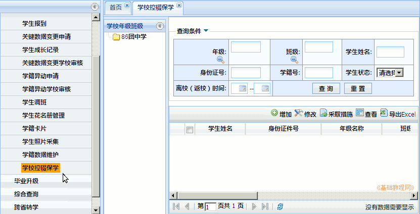
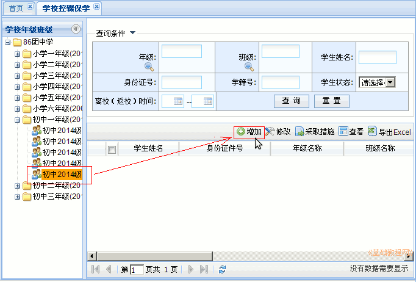
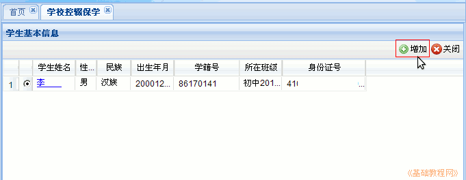
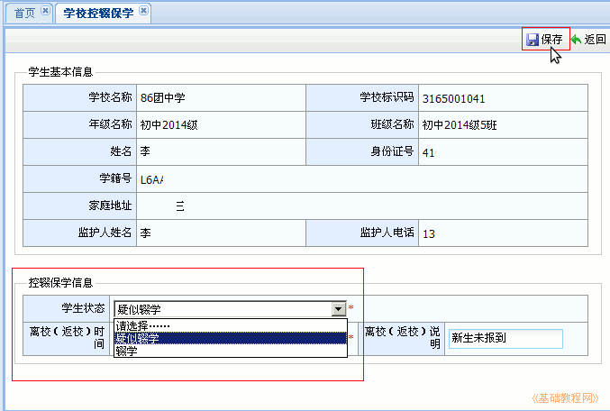
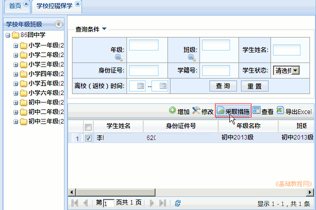
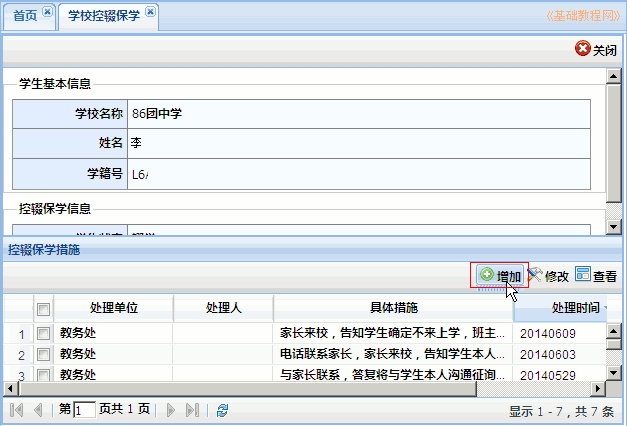
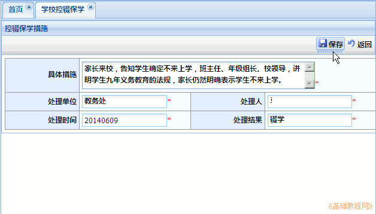
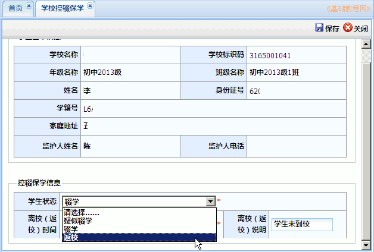

全国中小学生学籍管理系统操作指南
作者：TeliuTe 来源：基础教程网
十五、学校控辍保学 返回目录 下一课控辍保学用来记录学生辍学情况；
1、学校控辍保学
1）依次点“学籍管理－日常管理－学校控辍保学”，中间显示学校班级，右侧显示管理面板；

2）在中间栏，选择学生所在的班级，在右侧点击“增加”按钮；

3）在面板中显示班级所有学生，选择要处理的学生，点“增加”；

4）选择学生状态，一般先是“疑似辍学”，经过一段时间措施无效后再转为“辍学”，设置时间后点保存；

5）回到先前的面板，在中间选择班级找到该生，点击“采取措施”按钮，记录保控措施；

6）在处理的措施列表中点“增加”，添加一条措施记录；

7）依次输入措施、单位、处理人、时间、结果后点“保存”；

8）以后学生返校后，回到主界面点“修改”，将学生状态更改为“返校”即可恢复学生的正常状态；

本节学习了学校控辍保学的基础知识，如果你成功地完成了练习，请继续学习下一课内容；
本教程由TeliuTe制作|著作权所有
基础教程网：http://teliute.org/
美丽的校园……
转载和引用本站内容，请保留作者和本站链接。